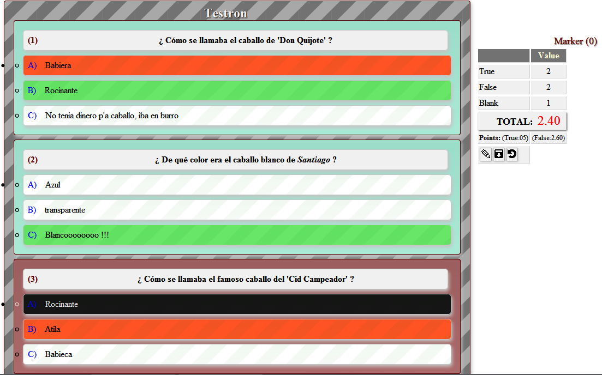

It is a Javascript API to perform questions of test type.
Testron v1.0.0
copyright @ 2016 - Juan José Guerra Haba <dinertron@gmail.com>License: Free. GPL.v3
Testron Tutorial
Introduction:
This can be used as a preparatory method for academic exams. You only need the questions file with a valid structure.
This file can be JSON format (object or string) or Javascript Object with one declared variable.
This rigid structure may contain configuration parameters (the conf property) where specify eg the
UI containers in which are embed questions and the Marker with
information and buttons, or if allowed to select multiple answers or only one, the charset to use, etc.
Here test represent a questions-battery.
This namespace relies heavily on the utility functions of an internal object implemented in the same
file, the 'util' object, which contains methods and objects statics, they could be used outside the same it, using
its 'classpath'.
It also contains the class Test, Test.Marker, Test.Question and Tests.Question.Answer, but is
more comfortable to use one unique method, which will does all job automaticly:
testron.parseTestrons (test, conf)
Loading and Using the Script:
Of course the first step will begin by loading the script in the page Head section, for example:
<script type="text/javascript" src="testron.min.js"> </script>
Once loaded, the script creates a global namespace testron which contains the all necessary for builder a questions battery. This is achieved using a simple 'parseTestrons (test, conf)' method, which supports two parameters:
- test: A Javascript Object (or string) which has the questions at JSON format. It must adjust it to a specific structure.
- conf: A Javascript Object for optional configuration.
Notes:
This library creates all UI which contains the questions and a Marker zone with a small action buttons menu.The Marker would place it in fixed position for a best visualization.
Although there has been an effort to make the library is cross-browser, a difference can be observed depending on the browser used, especially "IE".
GUI:
The graphical interface constructs itself and is embedded in the container element with the 'id' passed as a parameter. All the code you need (Javascript and HTML, CSS is separate for customization) is defined in the script itself 'testron.js', it is responsible for displaying two distinct areas, the Questions battery and Marker zones:
The Marker zone computes the actual score and show other information as the answer successes and failures, also are represented a buttons zone which symbolize the following actions:
- Edit button: Show a textarea with the complete JSON structure for the current questions. It allows the text edition or copying.
- Download button: Allows the download to file or a text copying.
- Reset button: Reset the questions solution and Marker.
The 'download button' may fail in certain configurations and browsers (IE ☹). -> SOLUTION: Copy the 'textarea' text and save it to an any text file.
COLOFON:
Testron has been designed as a tool for everyone which wish to learn or be prepared to face some hard test, it could be useful as training to examination of officials oppositions (firefighter, police, etc...)
I encourage all users to use Testron that can sure be helpful. To start you can experiment with the proposed examples to get familiar with it.